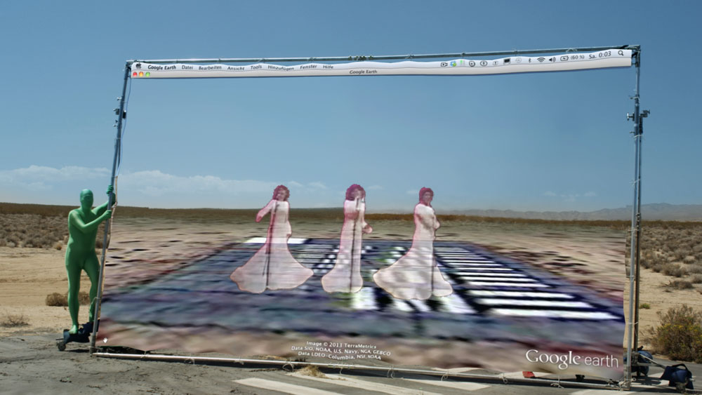
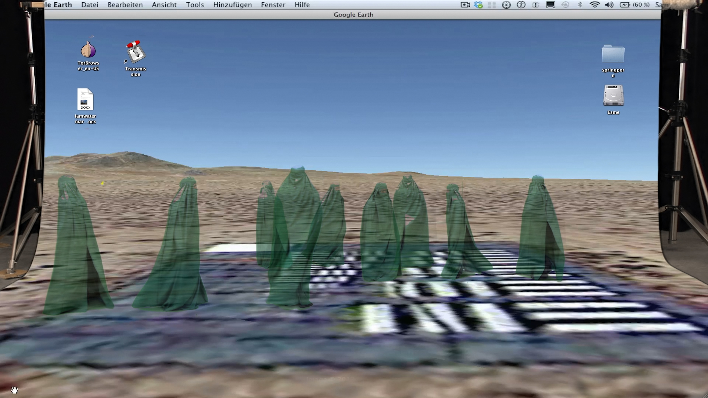
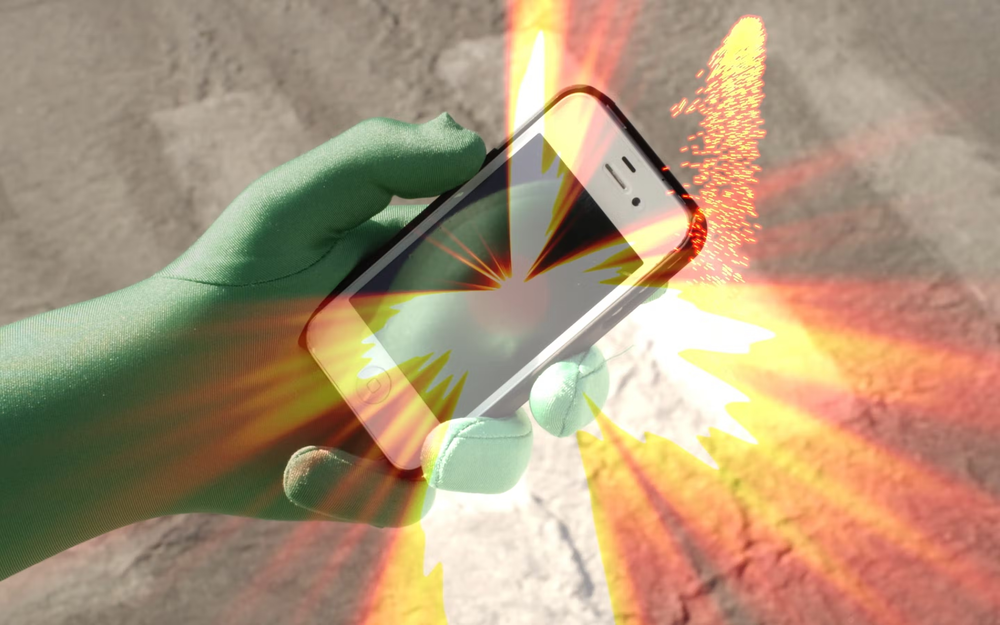
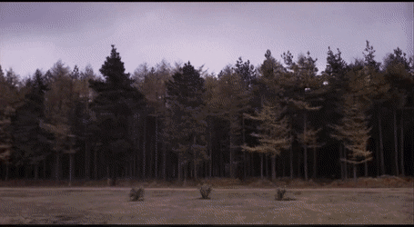
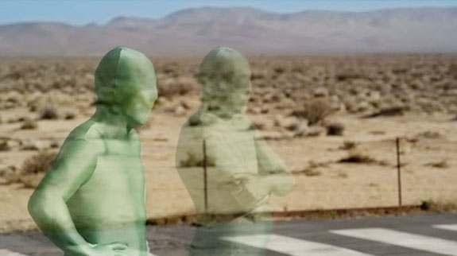
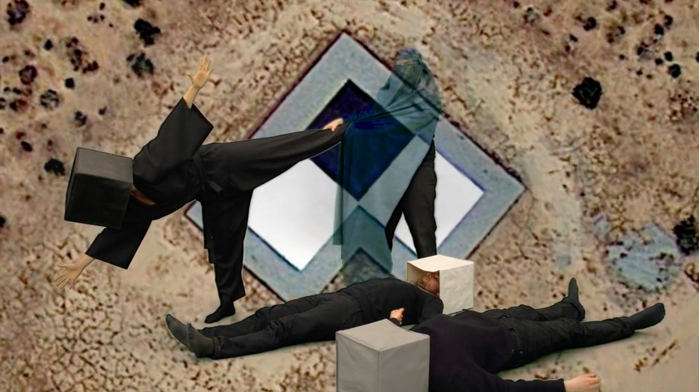
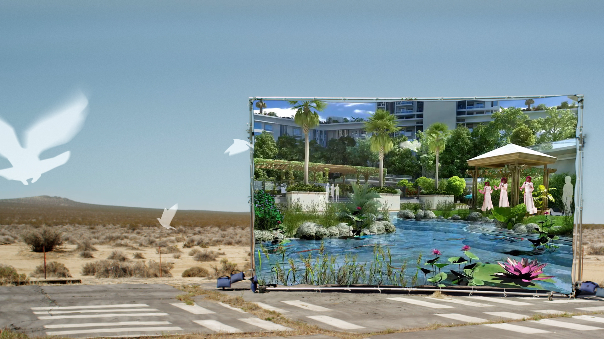

None of them can be seen
How Not to Be Seen: A Fucking Didactic Educational .MOV File (2013) by Hito Steyerl
Cut to a wide-angle shot of hedgerows, fields and trees.
Voice Over: In this picture there are forty people. None of them can be seen. In this film we hope to show you how not to be seen. In this film we hope to show how not to be seen. This is Mr. E.R. Bradshaw of Napier Court, Black Lion Road London SE5. He can not be seen. Now I am going to ask him to stand up. Mr. Bradshaw will you stand up please.
[Excerpt from the script]


Still frames from How Not to Be Seen: A Fucking Didactic Educational .MOV File (2013), a short film by Hito Steyerl.
Both drawing from and subverting the conventions of documentary film, Steyerl’s essayistic videos explore how images are produced, circulated, and interpreted. In her writings, she has referred to images as a “condensation of social forces”: in a world so heavily reliant on the exchange of digital information, digital images—due to their widespread proliferation and vulnerability to manipulation—serve as artifacts of social and political systems and their biases.
How Not to be Seen: A Fucking Didactic Educational .MOV File is the title of Hito Steyerl’s new work, included in the Venice Biennale exhibition Il Palazzo Enciclopedico. (It is installed at the far back corner of the Giardino delle Vergini behind the Arsenale; to reach it, Steyerl joked, one must swim two canals and climb a wall).
The video is partly inspired by the photo calibration targets in the California desert, which look like giant pixels in the ground. As described by the Center for Land Use Interpretation, these targets were used in the age of analog aerial photography to test the resolution of airborne cameras, like a kind of optometrist’s chart for the ancestors of drones. Partly shot on location at one of these disused targets, How Not to be Seen begins as an instructional video informing viewers how to remain invisible in an age of image proliferation.

Still frame from How Not to Be Seen: A Fucking Didactic Educational .MOV File (2013), by Hito Steyerl, an approach on images as a condensation of social forces, due to their widespread proliferation and vulnerability to manipulation.
Various possible strategies are outlined. One suggestion is to camouflage oneself (to demonstrate, Steyerl smears green paint on her face and is chroma-keyed into invisibility). Another suggested tactic is to be smaller than the size of a pixel. For this demonstration, several people appear on camera wearing pixel-like boxes on their heads. Wearing a box on one’s head may seem unpleasant, but in Steyerl’s video it seems quite fun, imbued with some of the techno-human spirit of Bauhaus theater costumes.
After these tactics are outlined, the film crew making this educational video also disappears. In their absence, happy low-resolution pixels take over the production. Digital rendering ghosts dance in the desert landscape as The Three Degrees’ “When Will I See You Again” plays on the soundtrack. Silliness ensues. For this work, whose basic premise is borrowed from a 1970 Monty Python sketch also titled “How Not to Be Seen,” the artist has satirically adopted the format of an instructional video to demonstrate strategies for remaining “unseen” in an age of “total over-visibility.” These tactics are narrated by a robotic voice and presented through real and virtual imagery that merge and interact. The work continually returns to the site of now-decommissioned US Air Force aerial-photography calibration targets in the California desert, for example, and to an animated rendering of a luxury residential housing complex.

Sequence from How Not to Be Seen: A Fucking Didactic Educational .MOV File (2013), a short film by Hito Steyerl.
Steyerl’s video picks up certain threads from her well-known text “In Defense of the Poor Image.” That text celebrates low-resolution images for being widely used, socially useful and non-authoritative. Her new work outlines reasons that have more to do with the way in which they allow their subjects to remain less visible, or more ambiguously figured. In conversation with Steyerl and Oliver Laric yesterday at Palazzo Peckham, I asked Steyerl about this desire to disappear. She pointed out that it is a highly ambivalent concept: it is something to be desired, that gives relief from the constant imaging that we are all subject to. But it is also something to be feared, evoking the spectre of mass political abduction. In fact, Steyerl’s video makes explicit reference to this dark side of disappearance, suggesting that those who are disappeared in the digital age end up as 3D ghosts in the background of architectural renderings. Such renderings are often generated by those who wield political power; it seems apt that they would be haunted by such ghosts.
Laric’s work Versions (2013) also ends with disappearance; its final words are “hybridize, or disappear.” In this context, it seems at first that disappearance is undesirable, a kind of threat. Like all of Laric’s texts, the phrase is a quote, in this case from Chinese-Canadian poet Fred Wah’s definition of the word “citizen” (for Wah, citizen is a verb. The definition begins, “citizen, vb. as in to citizen, -zening, -zened, -zens. To mix, to cross, to cast, to struggle...”it ends, “to strip, to separate, to reclaim, to constitute, to hybridize or disappear.”) For both Wah and Laric, hybridity and disappearance is a false binary. To hybridize is another kind of disappearance, and not necessarily an undesirable one.


Still frames from How Not to Be Seen: A Fucking Didactic Educational .MOV File (2013), a short film by Hito Steyerl.
One possible response to a world in which images of ourselves proliferate is to occupy the low-resolution spaces, as Steyerl proposes. In Versions, Laric proposes a different strategy: setting one’s image free to circulate, giving rise to hybrid versions and losing its sense of authenticity.
A similar strategy was previously adopted by Steyerl in her work Lovely Andrea, 2003. The back-story of this work is that Steyerl, at some point in her past, posed for a Japanese BDSM photography shoot, earning something like $100 in the process. Years later, she returned to Japan to try and find the photograph, speculating that it must have been published somewhere. Within 36 hours, she had found it, somewhat to her chagrin, in a magazine that was held in an extensive BDSM collection.
Laric spent some time in Japan as well. He was working as a designer, but it turned out that his boss was heavily involved in the BDSM scene, and quickly put Laric to work as a photographer for his bondage sessions. In a strange synchronicity, it turns out that this bondage master was the same man who acted as Steyerl’s tour guide in Lovely Andrea. Although the aspiration to be invisible and the aspiration to hybridize through image proliferation seem to be incompatible, they are closely linked.

Still frame from How Not to Be Seen: A Fucking Didactic Educational .MOV File (2013), by Hito Steyerl. The video reflects on the tension between the unprecedented capabilities of technology to surveil humans and encroach on physical experience.
In the context of the Venice Biennale, which explores the theme of human knowledge and its limits, this discussion brings up fundamental questions about how much of our knowledge is derived through representations of the world, through images and data, and the limits of such knowledge. During our conversation, Steyerl proposed a model for thinking about this, suggesting that the image world is a kind of three dimensional shape that is always shifting, always in flux. The images are all on the surface, and there is no interior, no depths that harbor fundamental truths. Perhaps “lo-res” can be seen as one way of occupying this hi-res image world. Or perhaps the world is not as hi-res as we think.
The video reflects on the tension between the unprecedented capabilities of technology to surveil humans and encroach on physical experience, and the social and political invisibility of marginalized populations. In searing commentary, both poignant and absurd, the disembodied speaker enumerates strategies for becoming invisible, including “being female and over fifty,” “being a disappeared person as an enemy of the state,” “being a Wi-Fi signal moving through human bodies,” and “being spam caught by a filter.”
Michael Connor (2013), in Hito Steyerl’s “How Not to be Seen: A Fucking Didactic Educational .MOV File”